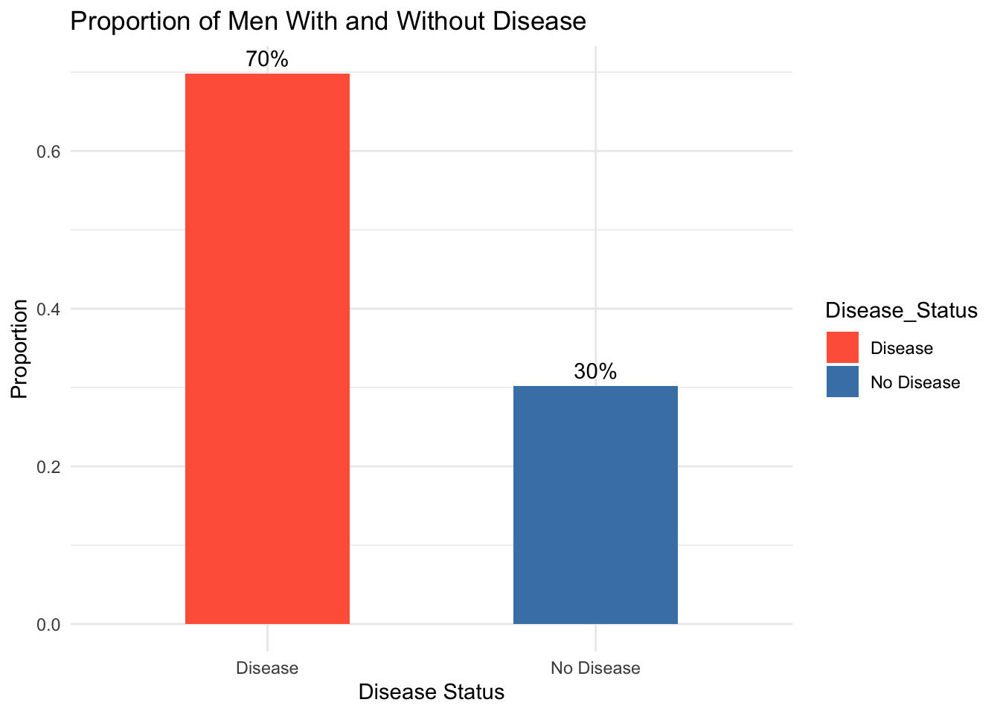
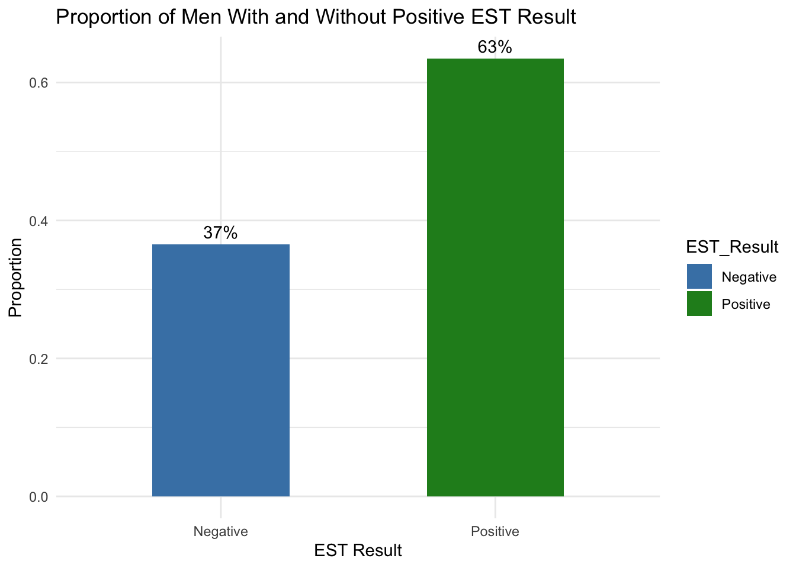
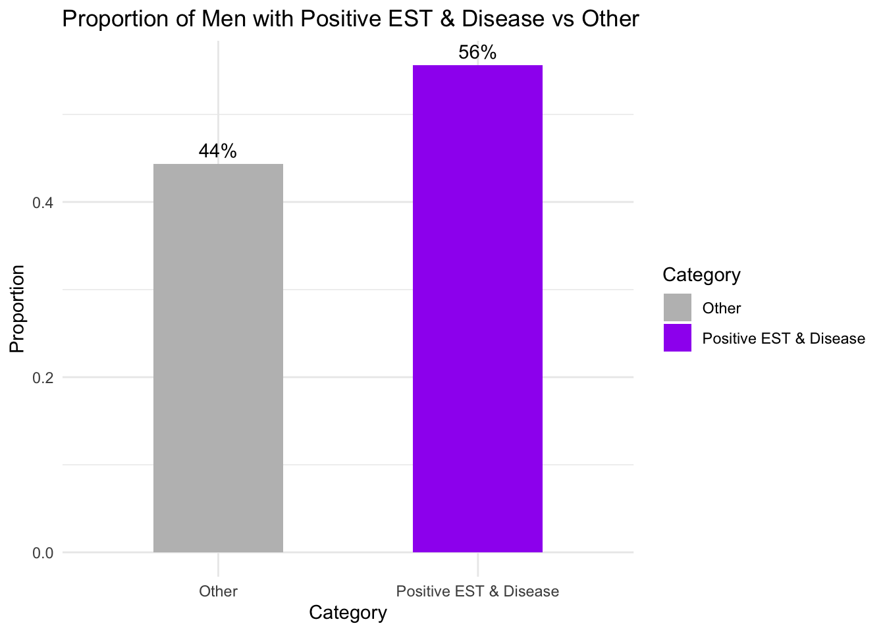

This file contains code exploring the Coronary Artery Surgery Study (CASS), exploring sensitivity, specificity as well as other proportions present in the dataset. Additionally problems 8 and 10 are tackled from chapter 6 of the textbook using R code to show work wherever possible. All internet resources are cited in APA format at the end of this PDF document.
Part 1: CASS Dataset Analysis
This data is a subset of the Coronary Artery Surgery Study (CASS) . looking at the use of an Exercise Stress Test (y1; 1=positive) and history of Chest Pain (y2; 1=yes) as predictors of coronary artery disease (d; 1=yes), as diagnosed by the gold standard of arteriography. The men in this sample were all undergoing coronary arteriography for suspected disease. The data is taken from “The Statistical Evaluation if Medical Tests for Classification and Prediction” by Margaret Pepe.
Assume this data is a random sample from the population of men who would undergo arteriography for suspected coronary artery disease.
From this data, compute :
a) Proportion of men in this sample who have disease
# CASS Dataset Part A: Proportion of men with and without disease (Bar Chart)# Encapsulation: Check if 'est1_data' is already loadedif (!exists("est1_data")) { est1_data <-read.csv("est1-1.csv")print("Dataset loaded!")} else {print("Dataset already loaded, using existing object.")}
[1] "Dataset loaded!"
# Calculate proportions of d (disease)d_counts <-table(est1_data$d)d_props <-prop.table(d_counts)# Convert to data frame for plottingd_df <-data.frame(Disease_Status =c("No Disease", "Disease"),Proportion =as.numeric(d_props))# Load ggplot2 library for visualizationlibrary(ggplot2)# Plot bar chartggplot(d_df, aes(x = Disease_Status, y = Proportion, fill = Disease_Status)) +geom_bar(stat ="identity", width =0.5) +scale_fill_manual(values =c("No Disease"="steelblue", "Disease"="tomato")) +labs(title ="Proportion of Men With and Without Disease",x ="Disease Status",y ="Proportion" ) +theme_minimal() +geom_text(aes(label = scales::percent(Proportion)), vjust =-0.5)

b) Proportion of men in this sample who score “Positive” on the Exercise Stress Test (y1=1)
# CASS Dataset Part B: Proportion of men who scored "Positive" on Exercise Stress Test (y1=1)# Encapsulation: Check if 'est1_data' is already loadedif (!exists("est1_data")) { est1_data <-read.csv("path/to/est1-1.csv")print("Dataset loaded!")} else {print("Dataset already loaded, using existing object.")}
[1] "Dataset already loaded, using existing object."
# Calculate proportions of y1 (Exercise Stress Test)y1_counts <-table(est1_data$y1)y1_props <-prop.table(y1_counts)# Convert to data frame for plottingy1_df <-data.frame(EST_Result =c("Negative", "Positive"),Proportion =as.numeric(y1_props))# Load ggplot2 library for visualizationlibrary(ggplot2)# Plot bar chartggplot(y1_df, aes(x = EST_Result, y = Proportion, fill = EST_Result)) +geom_bar(stat ="identity", width =0.5) +scale_fill_manual(values =c("Negative"="steelblue", "Positive"="forestgreen")) +labs(title ="Proportion of Men With and Without Positive EST Result",x ="EST Result",y ="Proportion" ) +theme_minimal() +geom_text(aes(label = scales::percent(Proportion)), vjust =-0.5)

c) Proportion of men in this sample who score “Positive” on the Exercise Stress Test and have disease (y1=1 & d=1)
# CASS Dataset Part C: Proportion of men who are positive on EST and have disease (y1=1 & d=1)# Encapsulation: Check if 'est1_data' is already loadedif (!exists("est1_data")) { est1_data <-read.csv("path/to/est1-1.csv")print("Dataset loaded!")} else {print("Dataset already loaded, using existing object.")}
[1] "Dataset already loaded, using existing object."
# Create a new variable for the combined condition (y1=1 & d=1)est1_data$EST_and_Disease <-ifelse(est1_data$y1 ==1& est1_data$d ==1, "Positive EST & Disease", "Other")# Calculate proportionscombo_counts <-table(est1_data$EST_and_Disease)combo_props <-prop.table(combo_counts)# Convert to data frame for plottingcombo_df <-data.frame(Category =names(combo_props),Proportion =as.numeric(combo_props))# Load ggplot2 library for visualizationlibrary(ggplot2)# Plot bar chartggplot(combo_df, aes(x = Category, y = Proportion, fill = Category)) +geom_bar(stat ="identity", width =0.5) +scale_fill_manual(values =c("Positive EST & Disease"="purple", "Other"="grey")) +labs(title ="Proportion of Men with Positive EST & Disease vs Other",x ="Category",y ="Proportion" ) +theme_minimal() +geom_text(aes(label = scales::percent(Proportion)), vjust =-0.5)

Thought Q1:
From a-c, do you think Disease status and result from EST are independent? Why or Why not?
From lecture we learned that two events say A (Disease) and B(Positive EST) are independent if
P(A∩B)=P(A)×P(B)
That is, thqat the probability of both events happening equals the product of the individual probabilities.
Now we can check this by seeing if it passes the independece product calculation:
If they were independent then the probability should be the following:
P(A)xP(B) = 0.698 x 0.635 = 0.443
However we observe that P(A∩B) = 0.556
In Conclusion, no, disease status and EST result are not independent, In fact, the EST result is associated with the disease status. Meaning having a positive EST result increases the likelihood of having the disease, as evidenced by the higher than expected joint probability.
d) Sensitivity, Specificity, and Predictive Value Positive of EST (y1)
# CASS Dataset Part D: Diagnostic Metrics for Exercise Stress Test (y1) using gt# Load gt library (assuming it's pre-installed)library(gt)
Warning: package 'gt' was built under R version 4.3.3
# Encapsulation: Check if 'est1_data' is already loadedif (!exists("est1_data")) { est1_data <-read.csv("path/to/est1-1.csv")print("Dataset loaded!")} else {print("Dataset already loaded, using existing object.")}
[1] "Dataset already loaded, using existing object."
e) Sensitivity, Specificity, and Predictive Value Positive of History of Chest Pain (y2)
# CASS Dataset Part E: Diagnostic Metrics for History of Chest Pain (y2) using gt with encapsulation# Encapsulation for est1_dataif (!exists("est1_data")) { est1_data <-read.csv("path/to/est1-1.csv")print("Dataset loaded!")} else {print("Dataset already loaded, using existing object.")}
[1] "Dataset already loaded, using existing object."
If you were choosing one of the two as a screening marker, and the most important thing was not to miss cases, which might you prefer?
If the most important consideration is not missing cases, I would choose the screening marker with the higher sensitivity, as sensitivity reflects the test’s ability to correctly identify individuals who actually have the disease. High sensitivity reduces the risk of false negatives, which is crucial in screening contexts where the consequences of missing a case could be severe. Based on our calculations, the Exercise Stress Test (y1) demonstrates a sensitivity of 0.857, which is higher than the Chest Pain (y2) sensitivity of 0.714, making y1 the preferable marker for ensuring true cases are detected. However, while y1 has better sensitivity, its specificity is 0.625 and PPV is 0.75, compared to y2’s specificity of 0.75 and PPV of 0.8, suggesting that y2 may produce fewer false positives and provide stronger predictive power when a positive result occurs. Despite this, when the goal is to avoid missing cases, the higher sensitivity of y1 outweighs these considerations, supporting its selection as the better screening marker.
Thought Q3:
If you were a patient with a positive on one of the two markers, which would give you a better shot of not having disease?
If I were a patient who tested positive on one of the two markers, I would prefer the marker with the higher specificity and positive predictive value (PPV), as these metrics reflect the likelihood that a positive test result truly indicates disease and the accuracy of the test in identifying healthy individuals. In our calculations, Chest Pain (y2) has a specificity of 0.75 and a PPV of 0.8, compared to Exercise Stress Test (y1) with a specificity of 0.625 and PPV of 0.75. This means that if I tested positive on y2, I would have a 20% chance of not having the disease, which is a slightly better reassurance than the 25% chance of not having the disease with a positive y1 result. Therefore, as a patient concerned about the implications of a positive test result, I would prefer y2 (Chest Pain) for its higher specificity and stronger predictive value, providing a better chance that a positive result does not mean I actually have the disease.
Part 2: Textbook Problems from Chapter 6
Question 8: Gestational age probability
a)
b)
c)
d)
Question 10: Principal sources of payment probability
Table denoting payment source and probability
a) What is the probability that the principal source of payment for a given hospital discharge is the patient’s private insurance?
b) What is the probability that the principal source of payment is a government program (including Medicare, Medicaid, and Other)?
c) Given that the primary source of payment is a government program, what is the probability that it is Medicare?
Sources:
Thank you for reviewing and making it to the end of my work, in this assignment’s signature end off I’d like to share a technology I’m learning about in my freetime called sequencing by expansion. Below is a youtube video explaining Roche’s technology!